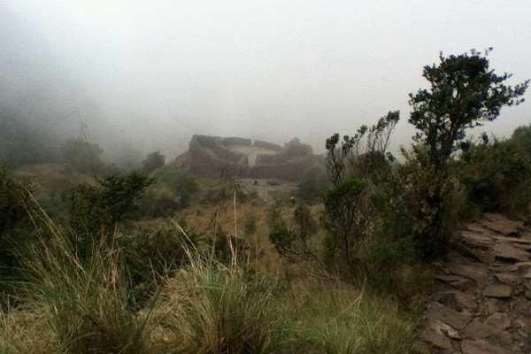

A compact, rounded tambo above the valley — the architectural warm-up before Day 3’s second pass.

Runkurakay (Runcu Raccay / Runkuracay spellings appear) is a compact Inca site on Day 3, climbed to after leaving Camp 2. It is often described as a tambo (waystation) with a distinctive rounded / oval footprint overlooking the valley.
Our guide elevation band is about 12,000 ft (3,600 m).
Popular interpretation: rest and control point for travelers on the royal road. As always, guide stories vary; the architecture and setting are the durable facts for hikers.
RUNKURAKAY · hash #runkurakay.
Our interactive Mapbox tour follows GPS collected on the classic Inca Trail — fly through this stop and the full route to Machu Picchu.